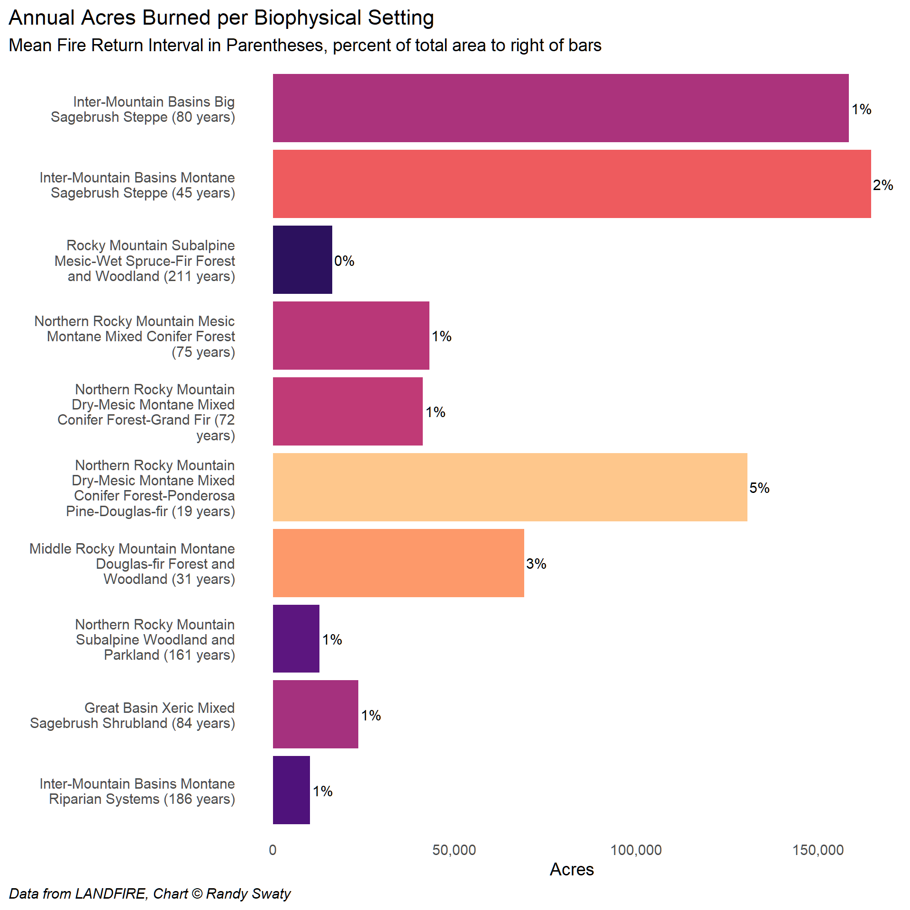

Historical Fire Regimes
Historical Fire in Idaho
On this page we look to the past, just before European colonization to explore historical fire regimes: which ecosystems burned, how much they would have burned per year and they types of fire those ecosystems had.
Below we present:
- a summary of historical fire regimes including an ‘artistic’ strip chart
- a simple bar chart of acres per Biophysical Setting (historical ecosystem) colored by historical fire regime
- a panel chart splitting out annual fire amounts by BpS and fire severity type
Summary
From a quick assessment of the historical Mean Fire Return Intervals for Idaho we found:
- Roughly 958,577 acres burned annually or 2% of Idaho.
- There were 82 Biophysical Settings (by name, there may be more if counting by variants). The Inter-Mountain Basins Big Sagebrush Steppe was the most prevalent overall, with the Inter-Mountain Basins Montane Sagebrush Steppe having the most fire annually.
- Mean Fire Return Intervals for all fire types combined ranged from 10 to 1223 years, with an area weighted mean of 103 (weighted by acres of BpSs)
Overview chart to explore historical fire regime patterns
The ‘strip chart’ below is intended to introduce the charts that follow.
- The colors are set by the historical Mean Fire Return Interval, with yellows indicating fewer years between fires, darker colors indicating more years between fires
- There is one rectangle per BpS; size of rectangle proportional to acres mapped. BpSs < 1,000ac not shown.
- Hover over rectangles to get more information.
Fire Return Interval and Severity by Biophysical Setting
LANDFIRE’s Biophysical Settings tells many stories. Officially it is:
a modeled representation of the vegetation system that may have been dominant on the landscape prior to Euro-American settlement and is based on both the current biophysical environment and an approximation of modeled past disturbance regimes. LF uses BPS to depict reference conditions of vegetation across landscapes.
It show us where vegetation systems may have occurred historically under natural disturbance regimes, and allows us to explore historical fire regimes including their Mean Fire Return Interval (MFRI) by fire type. The dataset includes multiple attributes including:
- BPS_CODE Biophysical Settings (BpS) code used by LANDFIRE
- ZONE National Land Cover Database Map Zone the BpS relates to
- BPS_MODEL Unique BpS model code
- BPS_NAME BpS Name
- FRI_REPLAC Average historic replacement fire frequency (greater than 75% top kill of vegetation)
- FRI_MIXED Average historic mixed fire frequency
- FRI_SURFAC Average historic surface fire frequency
- FRI_ALL Quantifies the average period between fires (all types).
You can download the raw attribute table here and the data dictionary here.
For the charts and data table below we added some additional calculations such as annual acres burned by fire severity.
Also see below for FRI_ALL “All Fires” calculation
Mean Fire Return Inverval by Biophysical Setting
The chart below indicates the total area (in acres) per Biophysical Setting and “All Fires” Mean Fire Return Interval (years, in parentheses). Colors set to match those of the map on the home page, and of the strip chart above.
Annual Acres Burned per Biophysical Setting
The above chart depicts how much of each BpS was on the landscape. The chart below depicts modeled annual acres burned per BpS.

Fire Severity by Biophysical Setting
The chart below depicts Mean Fire Return Interval per Biophysical Setting, split out by fire severity.

Almost raw historical fire regime data table
As noted above for the charts and data table we removed some columns (e.g., color ramp), added some calculations (e.g., annual acres burned) and renamed the columns for easier work in R and for clarity. Below you can filter, sort and explore the data. In the following table:
- ‘fri’ = fire return interval, or the mean number of years between fires
- There are several columns that will be ‘off screen’. Look for horizontal scroll bar at the bottom of the table.
- the “annual_probability_____” columns refer to the ‘chance’ that a location had that particular type of fire during a year on average.
LANDFIRE used the annual probabilities in the original modeling (see Blankenship et al., (2021) for more information). Below is an example of how the math works:
Example calculation of MFRI and annual acres burned for a 1,000 acre ecosystem with a 0.2 annual probability of fire:
\[
MFRI = 1/0.2 = 5ys
\] \[
AnnualAcresBurned = 1,000ac*0.2 = 50ac
\]